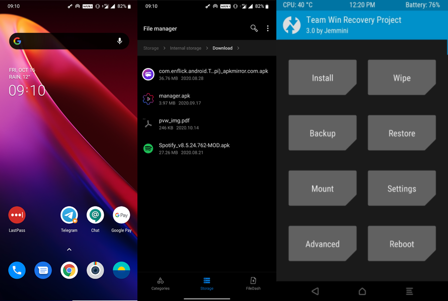

1. Il sistema operativo
Android
Il sistema Android ha la caratteristica di poter essere modificato a proprio piacimento.Ad esempio, è possibile installare applicazioni di terze parti (APK), Schermate Home personalizzate, Ottenere i permessi di root, Installare un sistema operatrivo personalizzato (Custom ROM) e molto altro 
iOS
Il sistema iOS è molto più chiuso e ristretto rispetto ad Android. E' possibile installare app solo dall'App Store ufficiale, e non è possibile apportare alcuna modifica. Se si sta cercando un sistema operativo semplice, questo è quello giusto